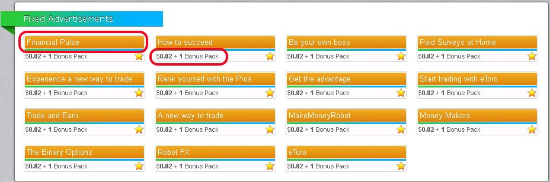
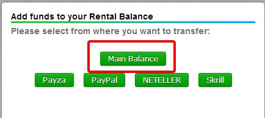
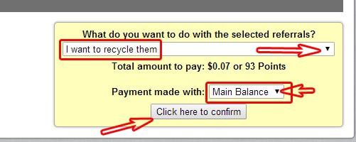

آموزش کاملا تصویری و قدم به قدم کسب درآمد میلیونی از اینترنت بدون نیاز به سرمایه و دانش اولیه سلام دوستان عزیز در این آموزش مصور قصد داریم به شما مطالبی را آموزش دهیم که قادر باشید به راحتی درآمد میلیونی کسب کنید .
ممکنه بسیاری از شما دوستان با این سیستم آشنایی قبلی داشته باشین و حداقل یکبار اونو تجربه کرده باشین ولی بدلیل عدم کسب نتایج مطلوب ، بیخیالش شده باشین !! این قضیه دلیل بر عیب سیستم نیست ، چون خود ما هم بعد از 3 سال خون دل خوردن و سنگ زیراسیاب شدن ! متوجه شدیم که عه ! چقدر خوب میشه ازین سیستم نتیجه گرفت ولی دیگه لازم نیست شما هم مثل ما سه سال سنگ زیر اسیاب بشین !! اصن چه کاریه ! ما تمام راه و روش های درست انجام این کار رو اینجا برای شما آماده کردیم ( چقدر ما خوبیم ! )
از شما میخوام مطالب آموزشی مارو به دقت بخونین و در مورد اینکار زود قضاوت نکنید . ما اینجاییم تا هر گونه نگرش منفی در مورد اینکار تغییر بدیم .
پس یک چای یا قهوه برای خودتون بریزین ، یه نفس عمیق بکشین و آماده پول در آوردن باشین
Paid To Click : این عبارت یعنی پرداخت به ازای کلیک . این روش نوعی از تبلیغاته که فرض کنید شرکتی یا شخصی که قصد تبلیغ محصول خودشون رو داره به جای اینکه اینکار رو رسانه هایی مانند تلویزیون و رادیو انجام بده و برای اینکار هزینه ی سنگینی رو پرداخت کنن ، در سایت هایی به اسم PTC یا همون سایت های کلیکی انجام میدن که اینکار برای هر دو طرف سود به همراه خواهد داشت به اینصورت که شخص و یا شرکت تبلیغ کننده هزینه ی بسیار کمتری برای تبلیغات متقبل خواهد شد و این سایت ها هزینه ای رو از شرکت ها دریافت میکننن و چون در این سایت های کلیکی بعضا میلیون ها کاربر وجود داره سایت کلیکی مد نظر بخشی از پول رو بین کاربرانی که این تبلیغات رو مشاهده کردن تقسیم میکنه و مابقی رو به عنوان هزینه ی تبلیغات برای خودش میگیره .
روال کار این سایت ها به هیچ وجه مانند بازاریابی شبکه ای یا هرمی نیست . درآمد شما با استفاده از سیستم مجموعه های اجاره ای و بازدید تبلیغات خودتون از سایت موردنظر بدست میاد .
اینها توضیحات کلی در مورد این سیستم بود و حالا به معرفی باحال ترین ، معتبرترین و پرسود ترین سایت کلیکی دنیا میپردازیم که تمام جیک و پیکه ! این سایت توسط تیم ایزی تِرید کشف شد .
سایت نئوباکس اولین سایت کلیکی دنیاست و معروف به پادشاه سایتهای کلیکی ، البته هرچقدر هم لات باشه واسه ما شکلاته !
این سایت فعالیت خودش رو از سال 2008 شروع کرده و در حال حاضر بیش از چندین میلیون کاربر داره و در واقع استارت سایتهای کلیکی از اینجا بوده . پرداختی های این سایت به کاربرانش فوق العاده هستش و پس از برداشت توسط کاربر وجه در کمتر از 2 دقیقه به حساب کاربر فرستاده میشه . از نظر تیم ایزی تِرید این سایت بینظیره و راه های زیادی هم برای کسب درآمد از این سایت وجود داره که در ادامه توضیح خواهم داد .
نمونه برداشتی ما از این سایت معتبر :

شما با روش های ما پیش برید مطمئنا جواب خواهید گرفت اگه نتیجه نداد بزن تو گوشه ترامپ !
از این به بعد قدم به قدم با ما پیش بیایید . در مرحله اول به آموزش ثبت نام این سایت می پردازیم .
نکته : توصیه میکنم ابتدا یک دور آموزش ها رو با تمرکز و چایی به دست مطالعه کنید و بعد اقدام به ثبت نام کنید.
نکته ی بسیار مهم : ساعت کامپیوتر یا لبتاپ خودتون رو حتما به وقت رسمی ایران تنظیم کنید .
تاریخ سیستم رو هم به میلادی تنظیم کنید . هر ساعتی که ثبت نام کردید اون زمان موقع ریست شدن آگهی ها هستش .
دوستان برای ثبت نام در این سایت بینظیر حتما از کامپیوتر استفاده کنید تا مشکلی برای اکانت شما و هنگام برداشت پیش نیاد . عزیزانی که با گوشی اقدام به ثبت نام میکنند مسولیت اینکار بر عهده ی خود آن هاست و تیم ایزی تِرید در صورت بروز مشکل پاسخگو نیست .
با رعایت نکات بالا مشکلی برای اکانت شما پیش نخواهد آمد و شما راحت میتونید کسب درآمد میلیونی از این سایت داشته باشید و پول رو به راحتی به حساب بانکی خودتون در ایران بفرستید .
اینم بگم که ما تا بحال کسی رو ندیدم با گوشی به مشکل بر بخوره ولی بهتره اینکار رو انجام ندید ( سری که درد نمیکنه دستمال نمیبندن )
توضیحات مربوط به هر تصویر در زیر تصویر قرار دارد
ابتدا بر روی بنر بالا کلیک کنید
توجه کنید حتما برای ثبت نام بر روی بنر بالا کلیک کنید وگرنه تیم easytrade2017 مسئولیتی در قبال اکانت شما نخواهد داشت .

Login : مربوط به کابرانی میشود که قبلا ثبت نام کردن و الان قصد ورود به اکانت خود را دارند
Register : مربوط به کاربرانی که عضو سایت نیستند و قصد عضویت در سایت را دارند . با توجه به توضیحات فوق بر روی Register کلیک کنید .
شما فقط یک بار ثبت نام میکنید و از این به بعد برای ورود به حساب کاربری از Login استفاده میکنید
Username : یک نام کابری به لاتین را در این قسمت وارد کنید .
Password : پسورد خود را در این قسمت وارد کنید . شامل حداقل 6 حرف باشد .
Password confirmation : پسورد خود را در این قسمت تکرار کنید
payza/paypal/skrill Email : ایمیل خود را در این قسمت تکرار کنید .
Referrer : به این قسمت کاری نداشته باشید .
Birth Year : سال تولد خود را به میلادی در این قسمت وارد کنید
Verification Code : حروف انگلیسی که در کنار تصویر هست در قسمت مستطیل شکل وارد کنید که برای اینجا UUADG می باشد
تیک مربع کوچک را بزنید و در نهایت بر روی Continue کلیک کنید . صفحه ای باز میشود ولی شما ابتدا وارد ایمیلی شوید که با آن ثبت نام کرده اید ، در ایمیل کدی از طرف نئوباکس قرار دارد .
یک کد مانند تصویر که در کادر قرمز رنگ قرار دادم از طرف نئوباکس برای شما ارسال شده این کد را کپی کنید .
کد کپی شده را در قسمت مستطیل شکل که با فلش قرمز رنگ مایل به آن اشاره شده وارد کنید در قسمت Verification Code کد تصویر را که در اینجا WEMEA هست در کادر مستطیل شکل وارد کنید و در نهایت بر روی finish registration که با فلش نشان داده شده کلیک کنید . شما الان ثبت نام کردید و یکی از کابران سایت بزرگ Neobux هستید . دقت کنید که ثبت نام فقط یکبار انجام میشود و از این پس برای ورود به حساب کابری خود طبق توضیحات فوق بر روی Login کلیک کنید .
برای ورود به حساب کابری خود طبق اولین تصویر در قسمت بالا بر روی Login کلیک کنید .
Username : نام کابری خود که در هنگام ثبت نام وارد کردید را در این قسمت وارد کنید .
Password پسورد خود را در این قسمت وارد کنید
Secondary Password : این قسمت را خالی بزارید و با آن کاری نداشته باشید
و بعد از آن بر روی send کلیک کنید تا وارد حساب کابری خودتون بشید .
recover password : اگر پسورد خو را فراموش کردید بر روی این گزینه کلیک کنید
recover username : اگر نام کاربری خود را فراموش کردید بر روی این گزینه کلیک کنید

اصلی ترین کاری که بعد از ورود به حساب کاربری خود باید انجام دهید بازدید از تبلیغات یا View Advertisement هستش که در کنار اون یه سری اعداد قرار داره و نشان دهنده نوع تبلیغ و میزان تبلیغی هستش که شما میتونید بازدید کنید . نحوه ی بازدید از تبلیغات رو بعد از توضیح قسمت های دیگر سایت توضیح خواهم داد .
Membership : نوع عضویت شما می باشد که در این حالت شما در عضویت استاندارد هستید که برای ارتقا عضویت بر روی علامت علامت + که در روبروی آن قرار دارد کلیک کنید ضمنا این رو بدونین که برای ارتقا عضویت بعد از ثبت نام باید حداقل از 100 تبلیغات بازدید کرده باشین
seen Advertisement : تبلیغات بازدید شده توسط شما و مجموعه های اجاره ای شما که You مربوط به شما و Your referrals مربوط به مجموعه های اجاره ای شما هستش . که در روبروی هر کدوم میزان تبلیغ مشاهده شده برای هر کدوم قرار داره
Account : حساب درآمدی می باشید که شامل دو بخش زیر است .
Main Balance : حساب درآمد اصلی می باشد و پولی که از طریق بازدید تبلیغات خودتون و مجموعه های اجاره ای به دست می آورید در این قسمت قرار میگیرد . و با این پول میتوانید هم برداشت کنید و به حساب بانکی خودتون در ایران بفرستید و هم به حساب درآمدی مجموعه یعنی Rental Balance بفرستید .
Rental Balance : از این قسمت برای تمدید یا بازیافت مجموعه های اجاره ای و همچنین خرید این مجموعه ها استفاده میکنید . که مقدار هر کدام از اینها در روبروی آن نوشته میشود .
Points : به ازای هر یک تبلیغی که مشاهده میکنید یک پوینت به دست می آورید با هر 93 پوینت میتوانید یک مجموعه ی غیر فعال را بازیافت کنید .
upgrade : از اینکه گزینه هم میتوانید برای ارتقا عضویت استفاده کنید . در این مورد در فایلPDF کامل توضیح داده شده و در اینجا فقط اشاره میکنیم .
referrals : در این قسمت شما قادر خواهید بود که مجموعه با بسته های مختلف را به مدت 30 روز اجاره کنید که تمام اصل موفقیت و شکست شما مربوط به مجموعه های اجاره ای می باشد .
در 2 مورد نحوه ی مدیریت مجموعه های اجاره ای و نحوه ی ارتقا عضویت در فایل pdf توضیح داده شده.
مهم ترین بخش :
دقت کنید که هر روز یک تایمی رو باید برای بازدید تبلیغات کنار بزارید و هر روز تبلیغات رو نگاه کنید تا سود کلیک مجموعه های اجاره ای به حساب شما واریز بشه . و اگر احیانا یک روز تبلیغات رو مشاهده نکنید سود روز بعد فعالیت مجموعه ها به حساب شما واریز نمیشه . خوب دقت کنین به این قسمت نگین عه ! ما که نمیدونستیم !
برای بازدید از تبلیغات بر روی View Advertisement کلیک کنید تا صفحه ی زیر باز شود حتما اول تبلیغات نارنجی رنگ که در پایین صفحه ی بازدید تبلیغات هست رو نگاه کنید و بعد به بازدید از بقیه ی تبلیغات ها بپردازید . بازدید از تبلیغات نارنجی رنگ از نون شب هم واجب تر هستش چرا که اگر اونا رو نبینید سود مجموعه به حساب شما واریز نمیشه . پس الویت شما اول تبلیغات نارنجی رنگ باشه بعد بقیه ی تبلیغات رو ببینید . در حالت استاندارد برای شما 4 تبلیغ وجود داره .
از آنجایی که بنده ارتقا عضویت دادم و عضویت آخر سایت نئوباکس رو دارم ارزش تبلیغات در این حالت $0.02 و در حالت استاندارد 0.001$ می باشد . خب حالا نحوه ی بازدید از یک تبلیغات رو آموزش میدم بقیه ی تبلیغات رو هم به همین روش مشاهده کنین . به فرض میخوایم اولین تبلیغ در سمت چپ رو ببینیم . ابتدا بر روی نوشته ی نارنجی رنگ آگهی کلیک کنید تا تصویر زیر ظاهر شود..
بر روی دایره ی قرمز رنگ کلیک کنید تا به صفحه ی بازدید تبلیغ انتقال داده شوید .
منتظر بمانید تا دایره ی زرد رنگ پر شود

بر روی کلمه ی close کلیک کنید تا به صفحه ی بازدید تبلیغ انتقال داده شوید و بقیه ی تبلیغات رو به همین صورت مشاهده کنید .
دقت کنید که باید تمام تبلیغات نارنجی رنگ را مشاهده کنید وگرنه اگر همه را به غیر از یک تبلیغ مشاهده کنید یا سود مجموعه واریز نمیشه و یا به طور کامل واریز نمیشود . ولی افرادی که قصد دارند بدون سرمایه کار کنند حتما همه ی تبلیغات رو نگاه کنن . چون اینجوری پوینت های بیشتری به دست میارن .
طبق تصویر بالا بر روی علامت + که در دایره ی قرمز رنگ قرار گرفته کلیک کنید تا وارد صفحه ی زیر شوید
در این قسمت انواع روش های انتقال پول به حساب Rental Balance وجود دارد که افرادی که قصد دارند پول رو از حساب Main Balance رنتال بالانس انتقال بدن طبق تصویر بالا بر روی Main Balance کلیک کنن
در این قسمت باید مبلغ مدنظر خودتون رو برای انتقال انتخاب کنید شما باید با فلش هایی در سمت راست و چپ مبلغ یک دلار وجود داره اون رو افزایش یا کاهش بدین (باحاله یجورایی ) . فلش های سمت راست باعث افزایش و فلش های سمت چپ باعث کاهش میشوند . بعد از اینکه وجه موردنظر رو انتخاب کردین بر روی نوشته transfer from your main balance کلیک کنین تا وجه به حساب Rental Balance انتقال داده شود . و درصورت پشیمان شدن بر روی return کلیک کنید.
ابتدا در صفحه ی اصلی بر روی referrals کلیک کنید تا صفحه ی زیر ظاهر شود
در قسمتی که با دایره قرمز رنگ مشخص شده انواع بسته های مختلف از مجموعه های اجاره ای وجود داره که شما با توجه به پول و نیازی که دارین هر بسته ای که خواستین رو انتخاب میکنین . قسمت بسته ی 3 تایی 0.6$ و بسته ی5 تایی 1$ می باشد . هر بسته ای که تونستید بخرید اون تعداد از رفرال ها به مدت 30 روز به شما اجاره داده میشه و شما تا زمان به اتمام رسیدن این مهلت 30 روزهباید دوباره اونها رو تمدید یا بازیافت کنید که این مربوط به قسمت استراتژی هستش و در فایل pdf توضیح داده شده .
در محیط کابری نئوباکس در قسمت سمت چپ مربوط به setting کلمه ای به اسم Personal یعنی شخصی وجود دارد که در اون قسمت شما میتونید پسورد رو تغییر بدین . برای اینکار بر روی Personal کلیک کنید
در قسمت Password پسورد جدیدی که مد نظر شماست رو وارد کنید در قسمت password Confirmation پسورد جدید خود را دوباره تکرار کنید و بعد به انتهای صفحه برید
در قسمت Primary Password در کادری که با فلش به آن اشاره شده پسورد قبلی رو وارد کنید و بعد بر روی save changes کلیک کنید . بعد از اینکار پسورد تغییر خواهد کرد . برای خروج از سایت هم بر روی Log out در بالای صفحه سمت چپ کلیک کنید .
دوستان دقت کنید اگر تا 24 ساعت بعد از ثبت نام تبیلغات رو مشاهده نکنید و یا اینکه تا 30 روز فعال نباشین اکانت شما بسته خواهد شد .
آموزش هایی کلی که لازم بود گفته شد . حالا دیگه شما یه کاربر چقر و بد بدن برای این سیستم هستید . استراتژی و قلق ها در ادامه آموزش گفته میشه . یادآوری میکنیم اصلی ترین نکته بازدید تبلیغات هستش حتما تایمی رو برای اینکار در روز در نظر بگیرید .
حتما به این قسمت توجه کنید و مانند تصویر بالا روی زمانی که من با دایره قرمز رنگ مشخص کردم برای خودتون رو چک کنید که چه ساعتی نوشته . الان برای من ساعت 2:17 بعد از ظهر هستش این یعنی تبلیغات هر 24 ساعت در این زمان برای من ریست میشه و من از این زمان به بعد میتونم تبلیغات رو ببینم و مهلت دیدن تبلیغات برای من تا قبل از 2:17 فرداش هست و اگر تا اون زمان تبلیغات رو نبینم سود روز بعد مجموعه برای من در نظر گرفته نمیشه . پس حتما به این نکته رو در تظر داشته باشین ( روزی 20 بار از روش بنویسین )
در صورت داشتن هر گونه سوال یا مشکلی برای ثبت نام و یا فعالیت در این سایت فوق العاده به آیدی @easy_trade در تلگرام و یا ایمیل easytrade2017@yahoo.com پیام بفرستین .
سلام دوباره خدمت همه ی دوستان در این قسمت از آموزش میخوایم استراتژی مربوط به مدیریت مجموعه های اجاره ای و ارتقا عضویت در سایت بینظیرنئوباکس رو آموزش بدیم و به شما دلیل عدمِ موفقیت بعضی از دوستان رو توضیح بدیم .
ابتدا یک نگاهی به میزان درآمد شما در عضویت های مختلف طبق گفته ی سایت خواهیم داریم
توضیح مربوط به هر تصویر در زیر تصویر داده شده است .
در تصویر بالا در نظر گرفته شده که شما عضو استاندارد هستید و 300 مجموعه اجاره ای دارید که هر کدام هر روز 4 کلیک انجام میدن که این بهترین حالت ممکن هست و رسیدن به چنین حدی نیاز به صبر و حوصله و مدیریت فوق العاده داره که برای تک تک شما دوستان دور از دسترس نیست در این حالت شما روزی 6 دلار و ماهی 181 دلار درآمد دارین و چون هزینه ی تمدید 300 مجموعه در ماه 61 دلاره در نتیجه یعنی سود خالص ماهیانه شما 120=61-181 دلار هست ( سریع نرخ روز دلار رو چک کنید ببینید ماهی چند هزار تومن درآمد دارین )
در تصویر بالا تمام حالت ها مانند تصویر قبلیه ولی در نظر گرفته شده که هر مجموعه اجاره ای میانگین کلیک 2 را به خودش اختصاص بده یعنی روزی 2 کلیک انجام دهد . در این حالت شما روزی 3 دلار و ماهیانه 91 دلار خواهید داشت و از آنجایی که هزینه تمدید 300 مجموعه اجاره ای 61 دلار هست در نتیجه سود خالص شما برابر است با 30=61-91 دلار سود خالص خواهید داشت .
موضوع به همین جا ختم نمیشه مگه الکیه !!!! در ادامه روش هایی رو توضیح خواهیم داد که درآمد شما با عضویت عادی ، سود خالص خود را چند برابر کنید . ( ماشین حساب مهندسی رو برای حساب کتاب آماده کنید )
در تصویر بالا عضویت گلدن ( طلایی ) رو بررسی میکنیم که هزینه ی خرید این عضویت 90 دلار خواهد بود و شما که 300 مجموعه اجاره ای داشتید در بهترین حالت ماهی 120 دلار درآمد داشتید . میتونید با همون درآمد این عضویت رو بخرید و اگر ماهیانه 30 دلار درآمد داشتید یا باید 2 ماه دیگه صبر کنید تا 90 دلار به دست بیارید و یا اینکه 60 دلار سرمایه گذاری کنید ( به جیبتون نگاه کنید ! ) در این حالت شما میتونید تا 2000 مجموعه اجاره ای داشته باشید و رسوندن 2000مجموعه اجاره ای به میانگین کلیک 4 در روز زمان بر خواهد بود ولی درآمد فوق العاده ای داره . در این حالت شما روزی 80 دلار و ماهی 2400 دلار درآمد دارید که هزینه ی تمدید 2000 مجوعه اجاره ای 500 دلار خواهد بود و در این حالت سود خالص شما برابر است با 1900=500-2400 (ماشین حساب مهندسی رو روشن کنین ) ولی خب بدونید که نابرده رنج گنج چی !؟ میسر نمیشود .
در حالت بالا که عموما رایج تر هست در نظر گرفته شده که همه ی حالات مانند قبل باشه ولی میانگین کلیک مجموعه ها 2 در نظر گرفته شده .
در این حالت شما با 2000 مجموعه اجاره ای که روزی 2 تبلیغات مشاهده میکنند . روزی 40 دلار و ماهی 1200 دلار درآمد خواهید داشت و از آنجایی که هزینه تمدید 2000 مجموعه 500 دلاره بنابراین سود خالص شما 700=500-1200 خواهد بود.
در تصویر بالا در نظر گرفته شده که عضویت شما ultimate یعنی بالاترین عضویت در سایت نئوباکسه باشه که ما این عضویت رو خریداری کردیم و بیش از 2000 مجموعه اجاره ای داریم و سقف مجموع در این حالت 4000 تاست و اگر مجموعه اجاره ای شما در این حالت 4 کلیک در روز انجام دهد شما روزی 160 دلار و ماهیانه 4800 دلار درآمد خواهید داشت که هزینه تمدید 4000 مجموعه اجاره ای 1000 دلار هست بنابراین سود خالص شما 3800=1000-4800 خواهد بود (ایولا داریم!)
رسیدن به این درآمد از نئوباکس ملزم به اینه که تکنیک هایی که در ادامه گفته میشه رو کامل اجرا کنید . در تصویر پایین شما عضویت ما رو مشاهده میکنید . ما طبق استراتژی ای که در ادامه میگیم پیش رفتیم و هر روز به درآمدمون اضافه میشه.
تصویر بالا اکانت ماست که به خاطر جلوگیری از هک شدن اکانت مجبور شدیم اطلاعات خودمون رو پنهان کنم ولی همینطور که میبینید ما عضویت گلدن و ultimate رو داریم و به آخرین عضویت نئوباکس رسیدیم و میانگین کلیک مجموعه های ما برای امروز تا ساعت 4 بعد از ظهر 1.87 هست و تا آخر شب بیشتر خواهد شد . پس با ما همراه باشید تا شما هم به چنین درآمدی برسید . موفقیت شما آرزوی ماست .
در تصویر بالا مانند تصویر قبل توضیح داده شده است با این تفاوت که میانگین کلیک مجموعه شما 2 باشد در این حالت شما روزی 80 دلار و ماهی 2400 دلار درآمد خواهید داشت و اگر هزینه ی تمدید رو از درآمد کسر کنیم . سود خالص شما 1400=1000-2400 خواهد بود ( تو این آموزش ماشین حساب کنار دستتون باشه !)
در این آموزش نحوه ی خرید مجموعه های اجاره ای به مدت 30 روز رو آموزش دادیم بدین صورت که باید بر رویreferrals کلیک میکردید و بسته ی مورد نظر خودتون رو انتخاب میکردید . و حالا قیمت مجموعه های اجاره ای برای سی روز :

طبق جدول بالا از 250-0 قیمت 0.20$ خواهد بود یعنی اگر قصد خرید 150 زیرمجموعه اجاره ای برای 30 روز رو دارید باید 150 رو ضرب در 0.20 بکنید که میشه 30 دلار یعنی برای150 مجموعه اجاره ای 30 دلار باید هزینه کرد .
مثال دوم : اگر دقت کنید اگر شما مثلا از قبل 750 مجموعه داشتید و میخواین بیشتر بخرید توی گروه 1000-751 قرار میگیرید و در این حالت قیمت هر رفرال 0.23$ خواهد بود و اگر قصد خرید 100 مجموعه رو دارید باید 100 ضرب در 0.23$ بشه که میشه 23 دلار .
وقتی که سقف حالت استاندارد رو زدید یعنی 300 رفرال داشتید که همه هم برای شما خوب کار میکنند یعنی تبلیغات رو میبینند و فعال هستند اگر به همین درآمد قانع بودید که در همین حالت می مونید و ارتقا عضویت نمیدید ولی اگر قصد ارتقا عضویت رو دارید باید بر روی upgrade کلیک کنید . همونطور که میبینید قیمت خرید اکانت گلدن اون هم برای یکسال فقط 90 دلار هستش که شما برای خرید اون لازم نیست کاری کنید و صرافی ای که بهتون معرفی میکنیم اینکار رو میکنه . شما مبلغ رو به تومان برای حساب صرافی میفرستید و اون اکانت رو برای شما میخره و چون قبل از اون 300 مجموعه اجاره ای داشتید و ماهیانه از 120-30 دلار درآمد خالص دارید بنا به درآمد خودتون این اکانت رو میخرید و اگر پول کافی نداشتید باید صبر کنید تا پول کافی رو به دست بیارید .
در تصویر بالا برای عضویت های مختلف توضیحاتی داده شده که ما نکات ضروری و مهم اون رو براتون تشریح می کنیم . این عضویت ها شامل عضویت استاندارد و گلدن نیست . ما بعد از خرید اکانت گلدن و رسیدن به 2000 مجموعه اجاره ای مستقیما اکانت نهایی یعنی ultimate رو خریدیم و نیازی به خرید عضویت های دیگه نیست
Inactivity Days Free Replacement امتیاز به صورت خودکار و رایگان برای بازیافت کردن مجموعه اجاره ای به افرادی که ارتقا عضویت میدند تعلق میگیره در صورتی که شما هر کدوم از عضویت های بالا رو داشته باشید و دارای مجموعه ی غیر فعال باشید سایت به صورت خودکار بدون هزینه ای برای شما بازیافت میکنه . که این از مزایای ارتقا عضویت هستش .مثلا در عضویت یولتی میت اگر دقت کنید نوشته Days 7 این یعنی اگر مجموعه ی شما تا هفت روز فعال نباشه برای شما رایگان بازیافت میکنه و بقیه هم به همین ترتیب هستش.
Rental Waiting Days این یعنی مدت زمانی که بعد از خرید مجموعه باید صبر کنید تا بتونید دوباره مجموعه بخرید . الان در اکانت ultimate نوشته شده 4 Days یعنی اگر من امروز مجموعه خریدم 4 روز بعد دوباره میتونم مجموعه بخرم و نه زودتر. بقیه ی عضویت ها با توجه به عددی که نوشته به همین صورت هستش .
Days Between Cashouts روزهای که باید صبر کرد تا برداشت بعدی رو انجام بدیم . بعنوان مثال در اکانت ultimate یعنی آخرین اکانت نوشته 1 Days یعنی شما هر 24 ساعت میتونید برداشت کنید و محدودیتی هم برای برداشت وجود ندارد .
Maximum Limit To Rent Referrals این یعنی حداکثر مجموعه اجاره ای که در هر عضویت میتونید داشته باشید . که برای اکانت ultimate این عدد 4000 و برای بقیه کمتر هستش .
در پایین هم قیمت خرید هر عضویت برای یکسال نوشته شده .دوستان دقت کنید تا اکانت گلدن رو نخرید نئوباکس به شما اجازه ی خرید بقیه ی عضویت ها رو نمیده . یعنی اول خرید اکانت گلدن بعد هر اکانتی که دوست داشتید .

در تصویر بالا سمت چپ کمیسیونی که از بازدید تبلیغات از طرف مجموعه های اجاره ای دریافت میکنید نوشته شده است . شما وقتی کمیسیون دریافت میکنید که مجموعه های اجاره ای شما تبلیغات نارنجی رنگ رو بازدید کنند یعنی همون Fixed Advertisements و شما هم وقتی از مجموعه های اجاره ای خودتون سود میگیرید که تبلیغات نارنجی رنگ رو دیده باشید پس الویت بازدید از تبلیغات با تبلیغات نارنجی رنگ هستش . وقتش رسیده کمسیون شما رو هم حساب کنیم ، ماشین حسابا آماده ! شما در حالت استاندارد از مجموعه های اجاره ای به ازای هر کلیک 0.005$ و به محض اینکه ارتقا عضویت بدین این رقم به 0.01$ افزایش پیدا می کنه ، یعنی دو برابر سود میکنید و این از مزایای ارتقا عضویت هستش . و درست همینجاست که با توجه به این همه مزایایی که از طرف نئوباکس دریافت میشه خیلی از افراد شکست میخورند و سرمایشون رو از دست میدن البته اونها تقصیری ندارند بلکه یه نکته ای رو در نظر نگرفتن !!! با ارتقا عضویت شما از طرف سایت نئوباکس برای مجموعه های شما فیلترینگ کلیک اعمال میشه یعنی اگر در حالت استاندارد میانگین کلیک مجموعه های 4 بود با ارتقا عضویت این میانگین کلیک به عدد 2 میرسه . انجام اینکار توسط نئوباکس کاملا منطقی و درست هست چون درسته که فیلترینگ اعمال میشه ولی از اون طرف سودی که از هر کلیک میگیرید 2 برابر شده و شما نباید گول میانگین کلیک رو بخورید و این عدم اطلاع دلیل اصلی شکست بعضی کابران نئوباکس هست .
در ادامه تکنیکی رو به شما یاد میدیم که در این شرایط باز هم سود بیشتری بگیرید . ( ما خیلی خیلی خوبیم ! )
برای اینکه از این شرایط بهترین استفاده رو ببرید و سود فوق العاده ای رو به دست بیارید باید حتما به اجاره مداوم یا خرید مداوم مجموعه های اجاره ای ادامه بدید البته این شامل حالت استاندارد نمیشه .
در ادامه استراتژی حالت استاندارد و گلدن و التیمیت رو توضیح میدیم.
نکته ی بسیار مهمی استراتژی بازیافت مجموعه های اجاره ای در عضویت های مختلفه که باید رعایت بشه.
بعد از اینکه مجموعه اجاره کردید و ما فرض میکنیم که مثلا 30 تا مجموعه اجاره کردید در قسمت Rented کنار عدد 30 علامت < وجود دارد که با کلیک کردن بر روی این گزینه طبق تصویر وارد محیط مجموعه های اجاره ای خود میشوید .
سه گزینه ای در کادر قرمز قرار دادیم که . Avg ، Last click و Next payment ابتدا هر یک رو توضیح و به بررسی کار کردن باهاش می پردازیم .
Avg : یعنی میانگین کلیک مجموعه های اجاره ای . به شماره های سمت چپ که از جایی یک میشه دقت کنید که هر شماره یک مجموعه هستش .
Last click : یعنی آخرین کلیک که منظور همان آخرین فعالیت مجموعه موردنظر هستش که فرض کنید اگر مجموعه شما امروز کلیک کرد با Today و اگر دیروز کلیک کرد yesterday و اگر 2 روز از آخرین فعالیت اون گذشت با 2 days و بعضا ممکنه آخرین فعالیت رو با تاریخ نشون بدن و اصرار ما به تنظیم تاریخ کامپیوتر به میلادی به همین منظور بود .
Next payment : پرداخت بعدی شما برای تمدید و یا بازیافت مجموعه رو نشون میده و این مدت زمان اعتبار مجموعه شماست . فرض کنید اگر در این قسمت نوشته 27 days یعنی 27 روز دیگه اعتبار این مجموعه به اتمام میرسه و باید نسبت به تمدید یا بازیافتش اقدام کنید.
در گوشه های سمت راست مربع های کوچکی وجود داره که من داخل سه تاشون رو تیک زدم اگر قصد دارید مجموعه ی فعالی رو تمدید و یا مجموعه ی غیرفعالی رو بازیافت کنید ابتدا باید تیک مربوط به مجموعه ی مورد نظر رو بزنید و فرض کنید ما میخوایم این سه مجموعه رو تمدید یا بازیافت کنیم . بعد از اینکه مجموعه های مورد نظر رو انتخاب کردیم به پایین صفحه میریم که طبق تصویر زیر می باشد .
در قسمتی که با فلش اشاره شده گفته شده که شما قصد دارید با مجموعه هایی که انتخاب کردید منظور همان مجموعه هایی هستش که تیک مربع اونها رو زدیم چیکار کنید؟ که شما هر قصدی دارید اعم از تمدید و یا بازیافت مجموعه ابتدا بر روی فلشی که داخل مربع قرار گرفته کلیک کنید .
در تصویر بالا شما گزینه های متفاوتی رو میبینید در یک ردیف نوشته I want to recycle them یعنی شما با کلیک بر روی این گزینه میخواین اونا رو بازیافت کنید . از گزینه ای که در بالا گفتم به پایین که اعداد 15 و 30 و 60 و ..... تا 240 رو میبینید اینها مربوط به تمدید مجموعه انتخابی هستش که اگر از 30 روز به بعد بخواین تمدید کنید شامل تخفیفات فوق العاده ای میشین (حالشو ببرین ) آخرین گزینه هم مربوط به پرچم گذاری مجموعه هستش . حالا فرض کنید میخوایم یک مجموعه رو بازیافت کنیم ، اگر روی نوشته ی بازیافت یعنی I want to recycle them کلیک کنیم تصویر زیر رو میبینیم .
فرض میکنیم میخوایم مجموعه رو بازیافت کنیم و یا اینکه تمدید کنیم . برای بازیافت یا باید از حساب درآمد 0.07$ هزینه کنیم یا اینکه 93 پوینت صرف اینکار کنیم ، تاکید ما مبنی بر رویت تبلیغات نارنجی پیش از بقیه ی تبلیغات ها فقط برای به دست آوردن پوینت بیشتر هستش تا در صورت لزوم ازشون استفاده کنیم . فرض می کنیم ما با استفاده از حساب درآمدیمون میخوایم مجموعه ای رو بازیافت کنیم کافیه که Main Balance رو انتخاب کنم و بعد بر روی Click here to confirm بزنیم تا مجموعه بازیافت بشه ( به همین راحتی به همین خوشمزگی )
تصویر بالا هم زمانیه که با پوینت بازیافت انجام بشه ، با پوینت مجموعه رو میشه تمدید کرد ولی پوینت زیادی به کار میبره .
اگر عملیات موفقیت آمیز باشد مثل همین عکس بالا ، پیام موفقیت یا عدم موفقیت تمدید یا بازیافت گفته میشه تو این عکس ما یک نفر رو بازیافت کردیم و سایت پیغام داده شما یک نفر رو بازیافت کردید .
در این مبحث ابتدا قوانینی که شما باید در عضویت های مختلف رعایت کنید رو میگیم سپس از استراتژی ما صحیت میکنیم و توضیح میدیم چه روشی استفاده کردیم .
بازیافت در حالت استاندارد :
بقیه ی مجموعه هایی که Avg بالاتر 1.8 دارند رو با هر last click که بود بازیافت نکنید و کمتر از 1.3 رو هم بازیافت نکنید و اجازه بدید مدت زمان اعتبارشون تموم بشه یعنی Next payment اونها صفر بشه
بازیافت در حالت گلدن Golden
بقیه ی مجموعه هایی که Avg بالایی دارند رو تمدید کنید و با بقیه ی رفرال های کم کار کاری نداشته باشید تا اتوماتیک وار حذف بشند .
بازیافت در پلن Ultimate
بقیه ی مجموعه های کم کار توسط نئوباکس هر روز بازیافت میشوند .
بنابراین کسانی که Avg بالاتری دارند را حتما تمدید کنید و مجموعه هایی که Avg پایینی دارند طبق فرمول های بالا بازیافت کنید و همیشه یک زمان برای Next payment در نظر بگیرید مثلا اگر 3 days بود تصمیم بگیرید باید تمدید شود یا به صورت اتوماتیک حذف شود و دیگر این قبیل مجموعه ها رو بازیافت نکنید .
تصویر زیر اکانت ماست که توضیحاتمون رو روی این حساب میگیم.
اکانت ما وقتی حالت استاندارد داشت این شکلی بود ! ما طبق قانون بالا که براتون گفتیم مجموعه های غیرفعال رو بازیافت رو فعال ها رو تمدید کردیم و همینطور که میبینید Avg فوق العاده ای داشتم و اگر به Next payment دقت کنید اونها رو به مدت 240 روز و 150 روز تمدید کردم و علت اینکارم رو هم میگم . بنده با همین قلق های بازیافت که گفتم در حالت استاندارد ماهی 160 دلار سود خاص داشتم . به تصویر زیر دقت کنید.
به تصویر بالا دقت کنید درصدهای گفته شده تخفیفاتی هست که سایت به ازای تمدید دراز مدت به شما میده که برای 30 روز 5 درصد و برای 150 روز 25 درصد و برای 240 روز 30 درصد تخفیف میده و اینها نکات طلایی موفقیت در نئوباکس هستش ( ازین نکات شبی 20 بار رونوشت کنین )
پس بهترین کار برای اسفاده از تخفیف ها تمدید دراز مدته در ابتدای کار تمدید و فعالیت به این شکل دشواره مخصوصا اگر بدون سرمایه باشه و برای ما هم که بدون سرمایه پیش رفتیم طول کشید تا به چنین جایی برسیم . شما که قصد فعالیت بدون سرمایه رو دارید ابتدا به مدت 15 تا 20 روز تمام تبلیغات نئوباکس رو مشاهده کنید و حتی یک تبلیغ رو هم از دست ندید تا 0.6 دلار تا 1 دلار به دست میارید بعد باهاش 3 تا 5 دلار به دست میارید و چون در حالت استاندارد هر روز میتونید مجموعه بخرید اول از بسته های سه تایی شروع کنید و کم کم بسته های بیشتری بگیرید تا سود بیشتری نصیب شما بشه و نکته ای که نباید فراموش بشه اینه که خرید مداوم مجموعه باعث نشه کل حساب main balance خالی بشه و به فرض اگر Next payment یک بسته ی شما 2 days بود پولی نباشه که تمدید کنید پس حواستون به ای قضیه باشه و سعی کنید اگر برای شما مقدور هست سرمایه گذاری کم کنید که برای خرید مجموعه سه الی پنج مدت 15 تا 20 روز معطل نشید . با 20 دلار سرمایه گذاری میتونید 100 مجموعه ی اجاره ای داشته باشید و با این 100 تا میتونید خیلی زود سقف حالت استاندارد رو بزنید یعنی به 300 تا برسید . بعد از اینکه سقف زدید بجای برداشت پول سعی کنید ازسودش برای تمدید طولانی مدت مثل 60 و 90 روز استفاده کنید با اینکار تخفیف میگیرید و سود خالص شما بیشتر میشه و اگر خواستید کل 300 تا رو یکجا بخرید هزینش 60 دلار میشه و من توصیه میکنم از سرمایه گذاری خیلی کم شروع کنید در حدی که معطل اون 20 روز نشید . شروع کنید و بعد که 300 تا کامل شد با غربال گیری که بهتون بالا یاد دادم سعی کنید مجموعه های یکدست داشته باشید و استراتژی ای هم که باید در حالت گلدن به بعد داشت اینه که مداوم مجموعه خریداری کرد و طبق فرمول بالا مجموعه های ضعیف رو بازیافت کرد و به عبارتی غربال گیری کنید و بازم توصیه میکنیم در شروع کار فقط به ازای هر 100 نفر ، روزی 2 نفر رو بازیافت کردن رو فراموش نکنید . دوستان اصل فرمول های بازیافت همونایی بود که در اختیار شما قرار دادم و این توضیحات راهنمایی ای کلی و روند فعالیت در نئوباکس بوده . یقین داشته باشید با انجام دقیق فرمول های بازیافت و صبر در اینکار به موفقیت چشمگیر دست پیدا میکنید و درآمد فوق العاده ای خواهید داشت .
راهنمایی نیاز داشتی به تلگرام ما پیام بدین
مشکلی داشتین درباره انجام کار به تلگرام ما پیام بدین
جایی از آموزش سوالی واست مطرح شد به تلگرام ما پیام بدین
کی ؟ به تلگرام ما پیام بدین
کجا ؟ به تلگرام ما پیام بدین
پیروز و سربلند باشید .